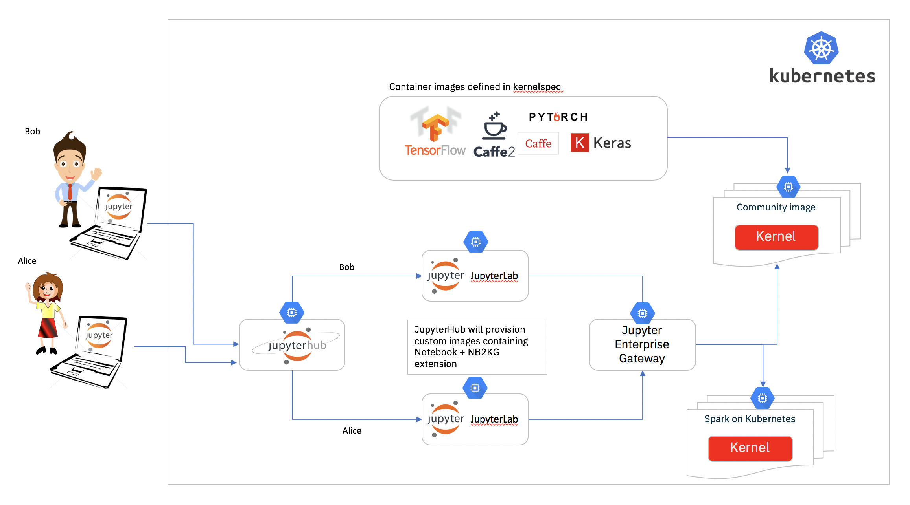

Jupyter no Kubernetes
Publicado em:
@gmcoringa
Jupyter é uma ferramenta para desenvolvimento iterativo com suporte a diversas linguagens. No Elo7 é amplamente utilizado pelo time de Ciência de Dados e mais atualmente pelo time de Engenharia de Dados. O jupyter faz uso do que ele chama de kernels para execução de notebooks, já os notebooks são onde se encontram os códigos que serão executados. O jupyter possui diversos kernels, que definem a linguagem suportada e até mesmo algumas características de como executá-la.
A seguir iremos detalhar como utilizamos o Kubernetes para uma arquitetura elástica do Jupyter.
Old school
O time de ciência de dados já utilizava o Jupyter há um bom tempo, porém, eles possuíam uma máquina bem grande na aws que era compartilhada entre todos os desenvolvedores.
Neste cenário, cada desenvolvedor que deseja utilizar-se do jupyter, acessa a máquina via ssh e cria seu container docker do jupyter. A imagem do container era gerada por eles onde diversos pacotes eram instalados. Podemos citar algumas características deste cenario: * Os desenvolvedores eram livres para utilizarem a imagem docker que desejassem, porém partiam de uma mesma imagem base * O disco da máquina host era compartilhado entre todos os containers, sendo assim, compartilhado por todos os desenvolvedores, o que facilitava o compartilhamento de código e dados gerados entre eles, porém o espaço em disco utilizado era consumido da máquina host. * Toda a configuração para iniciar o jupyter era realizada manualmente, o que gerava certo trabalho por parte dos desenvolvedores. * Não havia controle de uso de recursos, um desenvolvedor poderia consumir todos os recursos da máquina. * Pelo fato de ser um servidor compartilhado, podemos mencionar: * Em diversos momentos ficava ocioso (com apenas um usuário utilizando) ou mesmo sem uso * Falta de recursos quando a maioria dos desenvolvedores competiam por recusrsos no servidor, o que poderia impactar diretamente o trabalho de todos os desenvolvedores * Em algumas ocasiões, hardware diferente era necessário, como uso GPUs, o que requisitava a criação de outra máquina para essas ocasiões.
Como foi observado, este cenário trazia grande liberdade aos desenvolvedores, ao mesmo tempo em que poderia atrapalhar seu desenvolvimento no dia a dia.
Jupyter no Kubernetes
Tínhamos a ideia de criar um ambiente em que, ao efetuar login, cada usuário receberia acesso a um jupyter seu, onde os recursos ficariam isolados, de forma que não houvesse impacto a outros usuários, o que é possível através do Jupyter Hub, que gerencia múltiplas instâncias de jupyter, com suporte ao kubernetes.
Com essa ferramenta já éramos capazes de criar diversos jupyters, um para cada usuário, e vale ressaltar que o Jupyter Hub suporta diversos mecanismos de autenticação, o que simplifica bastante sua implantação.
Com ele também foi possível configurar um storage para cada usuário, com espaço dedicado para seu uso, veja https://z2jh.jupyter.org/en/latest/customizing/user-storage.html para maiores detalhes. Note que o jupyter hub utiliza Persistent Volumes para provisionar esses discos.
Legal, agora cada desenvolvedor tem seu próprio jupyter com seu próprio storage, porém os recursos são determinados no momento do login no jupyter, e estes não podem ser alterados em _ runtime_, portanto caso um desenvolvedor tenha a necessidade de um alto consumo de recursos em alguma tarefa que esteja desenvolvendo, ou mesmo necessite de hardware especial, como GPUs, não será possível com esta solução, voltando ao mesmo cenário descrito anteriormente.
Jupyter Enterprise Gateway
O Jupyter Enterprise Gateway introduz mais uma camada, onde além do jupyter ser provisionado no kubernetes, agora os kernels também são provisionados como pods independentes.

Sendo assim, ao efetuar o login, é criado um pod para cada usuário. Quando o usuário abre um notebook o enterprise gateway cria um pod para a execução do kernel. Desta forma é possível ter diversos tipos diferentes de kernels, cada um com perfil de consumo de recursos diferentes e inclusive requisitos de hardware distintos. Por exemplo, você pode possuir os seguintes kernels: * Spark Scala com GPU, onde ao iniciar este kernel é provisionada uma máquina com GPU e o kernel é iniciado nela * Python3 H1, que pode significar uma kernel que necessite de 32Gb de memória e 4 CPUs
Com um cluster kubernetes bem configurado, assim como as regras para autoscale das máquinas na aws, você terá acesso a um cluster elástico de acordo com a necessidade dos desenvolvedores a cada momento do dia.
Um excelente tutorial de como instalar toda essa infra-estrutura é encontrado em: Introducing Jupyter Enterprise Gateway.
Jupyter Enterprise Gateway no Elo7
No Elo7, o jupyter é executado em um cluster elástico, onde as máquinas são provisionadas de acordo com o uso. Vale ressaltar que este cluster utiliza somente uma única AZ, devido à limitação dos EBS, o qual é utilizado pelo Persistent Volumes. Desta forma, caso o pod do desenvolvedor seja realocado em outra máquina, o seu Persistent Volumes poderá ser montado na nova instância onde o pod for alocado.
Todas as imagens docker que utilizamos são customizadas para atenderem as nossas necessidades.
Possuímos diversos perfis de kernels configurados, casos para alto e baixo consumo de recursos, além de suporte a GPUs.
Cada usuário possui um limite de até dois kernels simultâneos, porém, devido ao fato de utilizarmos autenticação por usuário com o Jupyter Hub, foi necessária a alteração abaixo para que o Jupyter Enterprise Gateway interpretasse corretamente os usuários, no caso utilizamos o helm para instalação do jupyter hub:
hub:
db:
type: sqlite-memory
extraConfig: |-
from kubespawner import KubeSpawner
from tornado import gen
import yaml
class CustomKubeSpawner(KubeSpawner):
def get_env(self):
env = super().get_env()
env['KG_HTTP_USER'] = self.user.name
env['KERNEL_USERNAME'] = self.user.name
return env
c.JupyterHub.spawner_class = CustomKubeSpawner
config = '/etc/jupyter/jupyter_notebook_config.py'
c.Spawner.cmd = ['jupyter-labhub']
c.KubeSpawner.namespace_name_template = 'hub-{username}'
...
Quando o usuário efetua login pela primeira vez, ele deve configurar seu acesso ao github, utilizando suas credenciais, devido o fato de que cada usuário recebe um Persistent Volumes, o qual é mantido indeterminadamente.
Outro ganho que tivemos com esta arquitetura foi no agendamento dos notebooks: o mesmo notebook utilizado durante o desenvolvimento no jupyter pode ser agendado através do Apache Airflow e papermill, que apresentaremos em um post futuro.
Problemas encontrados
Com essas ferramentas conseguimos resolver boa parte dos nossos problemas no uso do jupyter, como uso de disco e recursos, porém nem tudo são flores, e atualmente temos as seguintes limitações: * Não é possível compartilhar notebooks através de imports ou dados, porque somente o notebook em execução é montado no pod onde o kernel o executa. Para solucionar esse problema, pretendemos analizar uma solução com o EFS através de discos compartilhados. Para compartilhar dados, atualmente, utilizamos o S3. * O uso de containers customizados on-demand não é possível, portanto, os desenvolvedores muitas vezes instalam pacotes através do notebook, o que resolve em muitos casos, mas caso utilizem o Apache Spark, a mesma solução não funciona, porque a instalação dos pacotes somente ocorrerá no driver do spark. Logo, esta alternativa somente funciona em kernels python, kernels como o do Spark em Scala não é possível esta solução.
Para notebooks em Scala, existe um bug no Apache Toree, que é utilizado por kernels com suporte a Scala, onde células que falhem em sua execução não retornam erro, desta forma ferramentas como papermill não conseguem identificar quando houve uma falha na execução de um notebook. Já existem iniciativas para a correção deste problema, veja TOREE-508 para maiores detalhes.
Conclusão
Através do uso do Jupyter Enterprise Gateway em conjunto com Jupyter Hub conseguimos melhorar o uso do jupyter no Elo7, onde os cientistas de dados resolveram alguns dos problemas que tinham. Além disso foi possível realizar uma redução de custos, porque somente existem instâncias em execução enquanto há uso de algum desenvolvedor. Outro fator responsável pela redução de custos foi o uso de spot instances.
Após a implantação dessas ferramentas, a adoção por outras equipes da empresa foi simplificada, o que ajudou bastante.